Introdução ao Git, GitHub e conceitos iniciais da linguagem de programação Python.
1 Introdução
2 História do Git e GitHub
2.1 Git
O Git foi criado por Linus Benedict Torvalds (nascido em Helsinque, em 28 de dezembro de 1969), engenheiro de software conhecido também por desenvolver o kernel do sistema operacional Linux.
O Git é um sistema de controle de versões distribuído, gratuito e de código aberto, amplamente utilizado para rastrear alterações em arquivos — principalmente em projetos de desenvolvimento de software. Ele permite a criação de várias linhas de desenvolvimento por meio de ramificações (branches), possibilitando colaboração simultânea de diversos desenvolvedores ao redor do mundo.
2.2 GitHub
O GitHub foi lançado em 2008, idealizado por Chris Wanstrath, P. J. Hyett, Tom Preston-Werner e Scott Chacon. É uma plataforma de hospedagem de código-fonte com controle de versão usando o Git.
É conhecida como a “rede social dos programadores”, pois permite interação entre usuários, visualização de projetos, contribuições públicas e colaboração em tempo real. Em 2018, a Microsoft adquiriu o GitHub por US$ 7,5 bilhões.
O GitHub também oferece ferramentas adicionais, como o Copilot, uma inteligência artificial desenvolvida em parceria com a OpenAI. Ele sugere ou escreve automaticamente trechos de código dentro de IDEs como o Visual Studio Code, com suporte a linguagens como Python, JavaScript, TypeScript, Ruby, R, entre outras.
3 Git e GitHub: Guia Prático
3.1 1. Criando Conta no GitHub
- Antes de usar o Git de forma prática, é necessário criar uma conta no GitHub:
- Acesse: https://github.com
- Clique em Entrar, ou Crie uma Conta.
- Preencha com e-mail, nome de usuário e senha.
- Após o cadastro, personalize seu perfil.
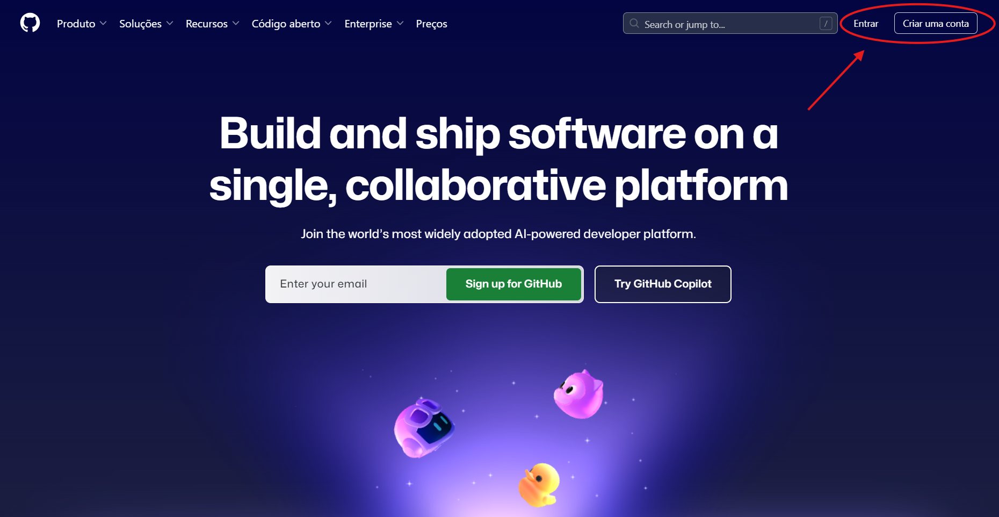
3.2 2. Instalação do Git
Para instalar o Git:
- Acesse o site oficial: https://git-scm.com/downloads
- Selecione seu sistema operacional (Windows, macOS ou Linux).
- Siga os passos de instalação.
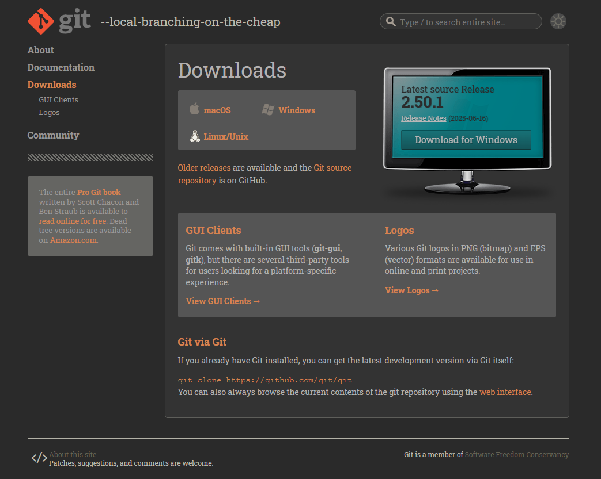
3.2.1 Verificando a instalação
- Após a instalação, abra o terminal (Prompt de Comando no Windows, ou Terminal no Linux/macOS) e digite:
git --version3.3 3. Configuração Inicial do Git
Depois de instalar o Git, configure seu nome e e-mail — os mesmos usados na criação da conta do GitHub. Esses dados identificam o autor das alterações feitas nos projetos.
Execute os seguintes comandos no terminal:
git config --global user.name "Seu Nome no GitHub"
git config --global user.email "seuemail@exemplo.com"3.3.1 Verificando a alteração.
git config list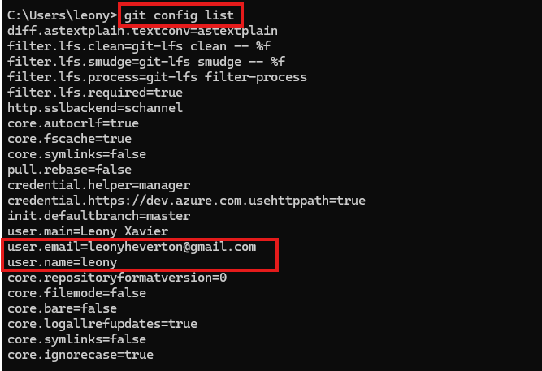
4 Comandos iniciais Git:
git status- Exibe o estado atual dos arquivos no repositório: quais foram modificados, adicionados ou não rastreados.
git init- Inicializa um repositório Git em uma pasta local (cria um diretório oculto chamado .git).
git add- Adiciona arquivos ao staging area (área de preparação para o commit).
git commit -a -m "nome do commit"- Registra as alterações adicionadas, criando uma nova versão no histórico.
git log- Mostra o histórico de commits realizados no repositório.
git push origin master- Envia as versões criadas (commits) locais para um repositório remoto (GitHub configurado anteriormente).
git pull origin master- Atualiza seu repositório local com as alterações que estão no repositório remoto.
git branch # Lista as branches
git branch nome # Cria uma nova branch
git checkout nome # Troca para uma branch- Lista, cria ou exclui ramificações (branches) no projeto. Muito usado para trabalhar em funcionalidades separadas sem afetar a versão principal.
4.1 4. Exemplo de commit e repositório enviado ao GitHub:
4.1.1 1. Criei uma pasta em minha área de trabalho e inseri um arquivo de texto genérico.
4.1.2 2. Em seguida, cliquei com o botão direito do mouse dentro da basta e apertei o botão Open Git Bash Here
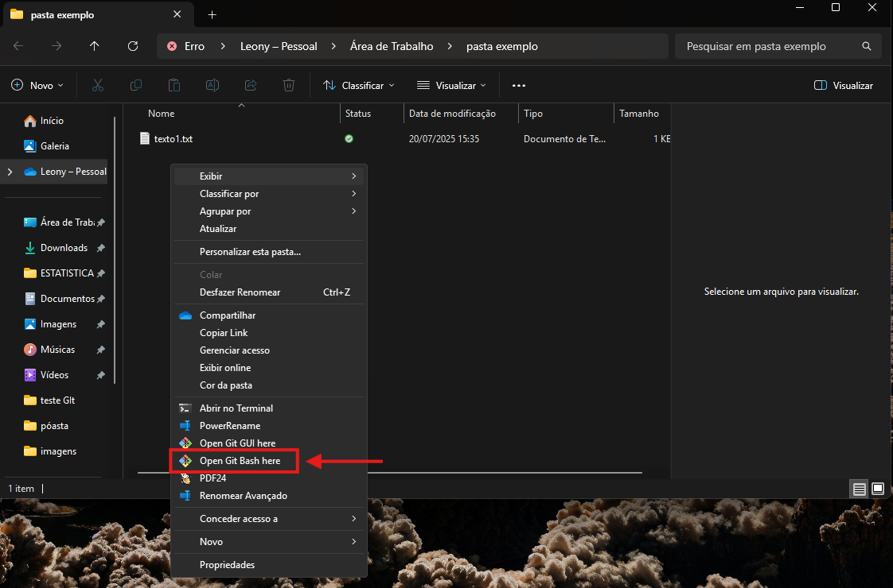
4.1.3 3. Criando um repositório com git init.
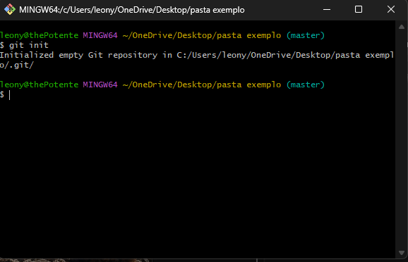
- Veja que ao criar um repositório, um nova pasta oculta
.gité gerada dentro da pasta que você criou esse repositório. Isso significa que está tudo certo e seu repositório foi criado com sucesso.
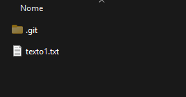
4.1.3.1 4. Para criar um commit nesse repositório é necessário utilizar o comando git add .. O “.” após o add serve para incluir todos os arquivos dentro da pasta em que o repositório foi criado.
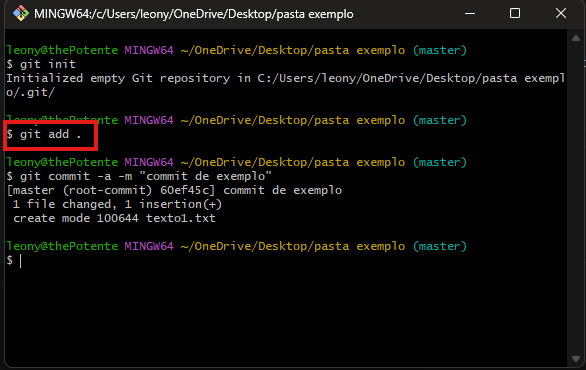
- Após preparar o arquivo para ser versionado, utilizamos o comando
git commit -a -m "commit"para commitar essse arquivo. Dessa forma:
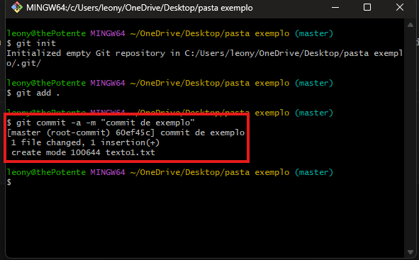
4.1.4 5. Enviado o repositório ao GitHub.
- Precisamos criar um novo repositório no GitHub. Você pode alterar as configurações de criação. Dessa forma:
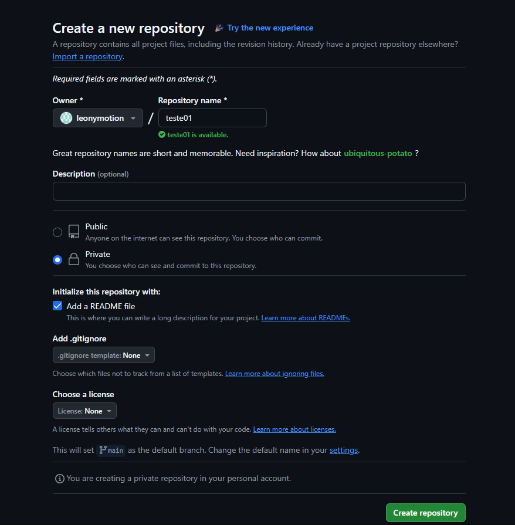
- Após criar o repositório, utilizamos o comando
git remote add origin link do repositóriono git para conectar os z
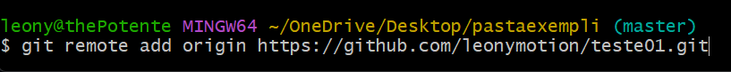
- Com o arquivo commitado, utilizamos o comando
git push origin masterpara enviar o repositório ao GitHub.
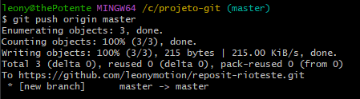
- Abrindo o repositório criado no GitHub, verificamos que o commmit foi enviado com sucesso.
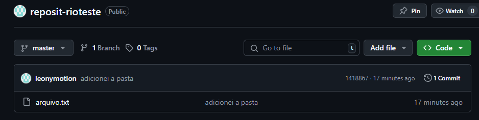
4.2 5. Como clonar projetos já criados do GitHub, para sua máquina local.
- Verifique o repositório que você deseja clonar em sua máquina. Vou utilizar um repositório próprio, previamente deletado.
- Clique no botão verde “Code”
- Copie a URL
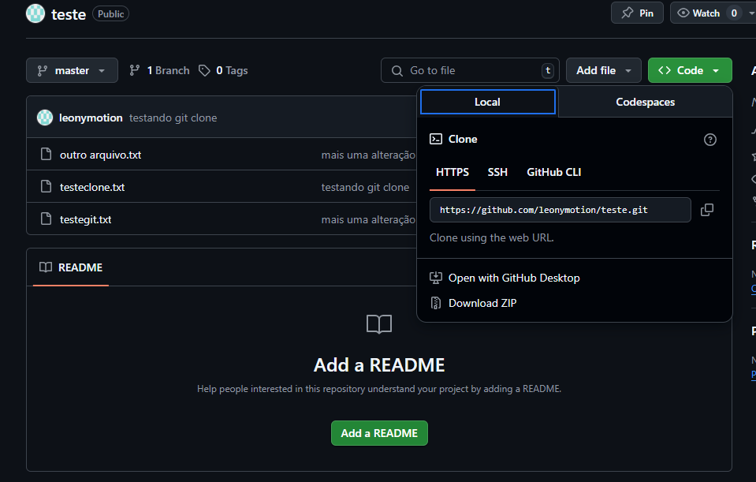
- Abra o terminal Git CMD
- Acesse a pasta onde deseja salvar o projeto
- Use o comando
git clone url copiado
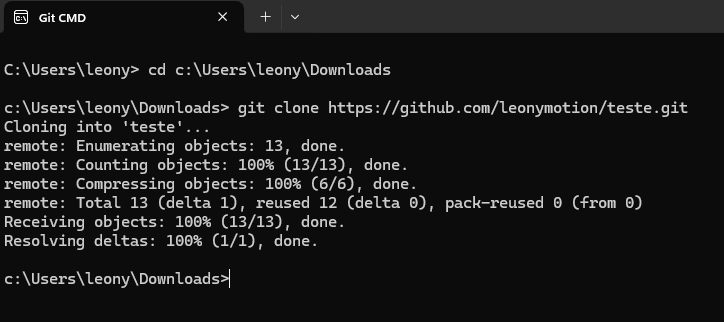
- Na pasta selecionada, podemos ver que o repositório foi clonado com sucesso.
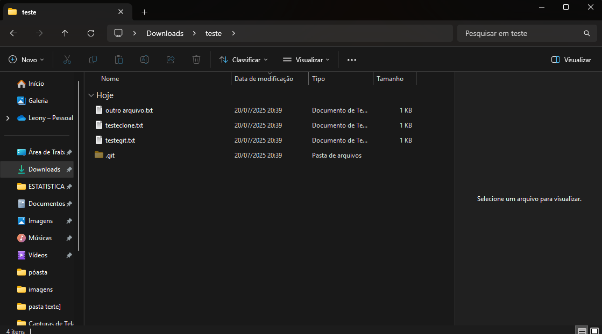
- Com o comando git clone, podemos fazer um fork de projetos em outras máquinas e continuar o trabalho em outro local. Em seguida, commitar as alterações, e dar um
git pushpara que as alterações sejam enviadas para o GitHub atualizadas. Caso o projeto não seja de sua autoria, o push subirá como notificação de pull request para o autor do projeto, que poderá revisar e aceitar suas mudanças. Se aceitas, suas contribuições passarão a fazer parte do projeto principal, e você será reconhecido como colaborador.
5 Pip
5.1 O que é o pip?
Pip é o gerenciador de pacotes oficiais do Python. Ele permite instalar, atualizar e remover bibliotecas que podem ser encontradas no site e ferramentas externas, facilitando o uso de funcionalidades adicionais em seus projetos.
6 Verifique se o pip está instalado em sua máquina
- Para verificar se o pip está instalado em sua máquina você deve abrir o Promt de comando e digitar:
pip --versionVersões do pip são diferentes, dependendo do seu sistema operacional. Verifique no link de instalação mais abaixo a versão ideal para sua máquina.
Caso instalado, a seguinte mensagem aparece:
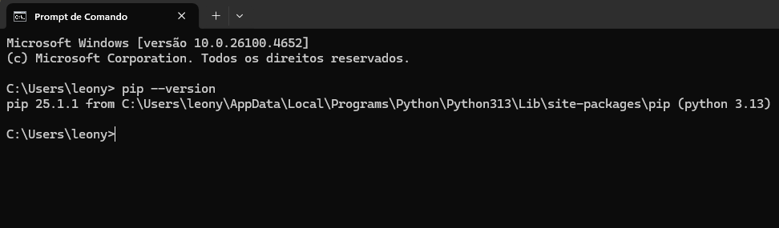
Do contrário, recomendo a instalação pelo site oficial: https://pypi.org/project/pip/#files
É necessário instalar a linguagem python primeiro, para conseguir instalar o pip com sucesso. A partir da versão 3.4 o pip vem instalado automaticamente. No tópico 8.1 deste relatório contém um passo a passo de instalação da linguagem. Sugiro seguir esse passo a passo antes de instalar o pip.
- Após instalação, verifique novamente com o comando:
pip --version6.1 Comandos básicos de pip
pip install nome-do-pacote- Instala os pacotes.
pip install --upgrade nome-do-pacote- Atualiza o pacote instalado à versão mais recente.
pip uninstall nome-do-pacote- Desinstala um pacote da sua máquina.
pip show nome-do-pacote- Verifica as informações de um pacote.
pip list- Lista os pacotes instalados.
pip freeze- O pip freeze é como o
pip list, mas ele só fala as bibliotecas instaladas manualmente por você.
pip freeze > requirements.txt- Cria um arquivo
requirements.txtlistando todos os seus pacotes intalados manualmente para o ambiente em que o comando for utilizado
pip install -r requirements.txtAo clonar um projeto do GitHub que possui um arquivo requirements.txt, você pode instalar todos os pacotes usados no projeto de forma simples.
Após usar o comando
git clone, siga os passos:Acesse a pasta do projeto clonado, onde está localizado o arquivo
requirements.txt;No Prompt de comando, execute:
pip install -r requirements.txtEm alguns casos, o arquivo pode ter outro nome. Nesse caso, basta substituir o nome requirements pelo do arquivo clonado. Por exemplo pip install -r pacotes.txt.
6.1.1 Exemplo de instalação e alteração de pacotes
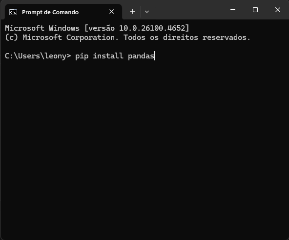
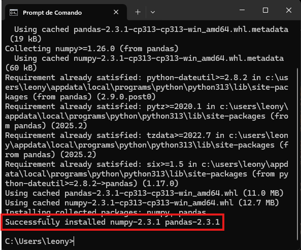
6.1.2 Atualizando o paconte instalado
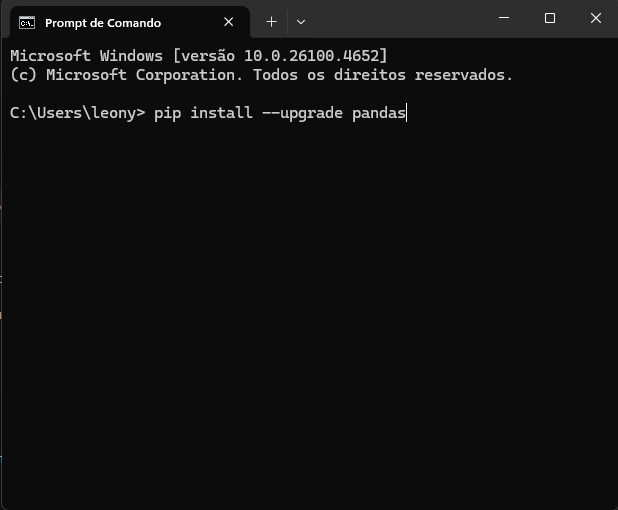
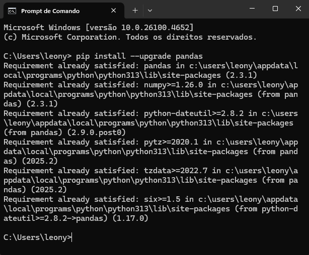
6.1.3 Desinstalando o pacote instalado
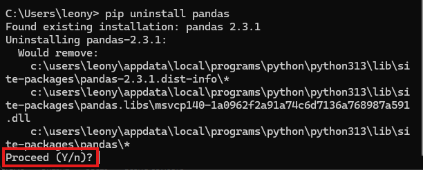
- Perceba que após utilizar o
pip uninstallele pede sua confirmação para continuar com a operação. Caso você realmente queira desinstalar, basta escrever y e confirmar no prompt de comando.
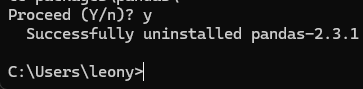
7 Exemplos de bibliotecas populares do Python
O Python possui uma vasta quantidade de bibliotecas que facilitam o desenvolvimento de projetos nas mais diversas áreas. Entre eles:
7.0.1 pandas
Utilizada para análise e manipulação de dados, especialmente em tabelas (DataFrames). É amplamente usada em ciência de dados e estatística. Permite ler arquivos .csv, .xlsx e realizar operações como filtragem, agrupamento, ordenação, entre outras.
As duas principais estruturas do pandas são:
- DataFrame: uma tabela bidimensional com rótulos nas linhas e colunas (semelhante a uma planilha Excel ou tabela SQL);
- Series: uma estrutura unidimensional com rótulo, semelhante a uma coluna de uma tabela.
Com pandas, é possível:
- Ler e gravar arquivos em diversos formatos:
.csv,.xlsx,.json,.sql, entre outros; - Filtrar, agrupar, ordenar e transformar dados de forma eficiente;
- Tratar dados ausentes (valores nulos);
- Fazer junções (merge) entre tabelas;
- Analisar séries temporais e dados indexados por datas;
- Integrar com outras bibliotecas como
matplotlib,numpy,seabornescikit-learn.
7.0.2 numpy
NumPy É o pacote fundamental para computação científica com Python. Ele fornece um poderoso objeto de array multidimensional (ndarray), além de objetos derivados, como matrizes e arrays mascarados. Também oferece uma grande variedade de rotinas para operações rápidas sobre arrays, incluindo:
- Operações matemáticas e lógicas;
- Manipulação de forma (reshape);
- Ordenação e seleção de dados;
- Entrada e saída de arquivos (I/O);
- Transformadas de Fourier;
- Álgebra linear básica;
- Operações estatísticas básicas;
- Simulações aleatórias.
O numpy serve como base para diversas outras bibliotecas científicas, sendo essencial em áreas como estatística, engenharia, aprendizado de máquina e modelagem matemática.
7.0.3 matplotlib
Matplotlib é uma biblioteca de visualização de dados em 2D. Com ela, é possível criar gráficos variados como:
- Gráficos de linha, barras, pizza, dispersão (scatter) e histogramas;
- Personalizações visuais com cores, títulos, legendas e rótulos;
- Exportação de gráficos como imagens (PNG, SVG, etc).
É amplamente utilizada para análises exploratórias e apresentação de resultados em relatórios técnicos e científicos.
7.0.4 requests
A biblioteca requests é uma das mais utilizadas para realizar requisições HTTP com Python. Ela permite:
- Acessar páginas web e APIs REST;
- Enviar e receber dados no formato JSON;
- Trabalhar com autenticação, cabeçalhos personalizados e parâmetros de URL.
É uma ferramenta essencial para projetos que envolvem coleta de dados externos, automação de tarefas via web ou integração com serviços online.
8 Conceitos iniciais da linguagem python.
Conhecida como a linguagem mais prática e com uma maior curva de aprendizado, a linguagem python é muito poderosa e amplamente utilizada no mundo de desenvolvimento. Python possui uma estrutura de escrita clara e simples, ganhando muita popularidade nos últimos anos devido sua facilidade de aprendizado e seu alto nível.
lançada por Guido van Rossum em 1991 no Instituto de Pesquisa Nacional para Matemática e Ciência da Computação (CWI), atualmente possui um modelo de código aberto, gerenciado sem fins lucrativos pela organização Python Software Foundation.
O nome Python teve a sua origem no grupo humorístico britânico Monty Python, criador do programa Monty Python’s Flying Circus, embora muitas pessoas façam associação com o réptil do mesmo nome, em português píton.

8.1 Instalação da linguagem python.
- Para instalar o python, acesse esse link:python, e siga as instruições de download.
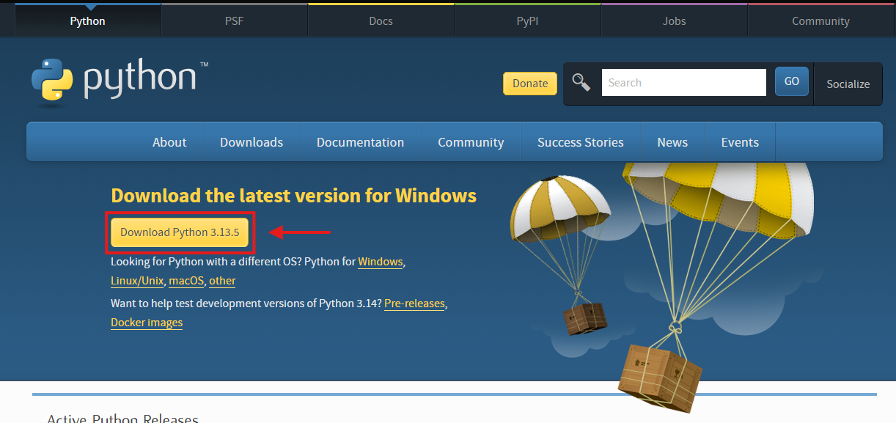
8.2 Tipos de dados:
int: Números inteiros (ex:10,-3,0) Seguem a estrutura simples de número sem ponto decimal.
idade = 19
print("Idade:", idade)float: Números reais ou decimais (ex:3.14,-2.0) devem incluir ponto (.) como separador.
salario = 1518.00
print("Salário:", salario)str: Sequências de caracteres (ex:"texto",'Python') sempre entre aspas simples'texto'ou duplas"texto".
nome = "Leony"
print("Nome:", nome)bool: Valores lógicos (ex:True,False) escritos com inicial maiúscula:TrueouFalse.
aprovado = True
print("Está aprovado?", aprovado)
# Exemplo:
media = 7.5
print("Aprovado?", media >= 7) # retorna True8.3 Variáveis e operadores básicos
8.4 Operadores Aritméticos
| Operador | Descrição | Exemplo | Resultado |
|---|---|---|---|
+ |
Adição | 1 + 1 |
2 |
- |
Subtração | 2 - 1 |
1 |
* |
Multiplicação | 2 * 2 |
4 |
/ |
Divisão | 8 / 2 |
4.0 |
// |
Divisão inteira | 9 // 2 |
4 |
% |
Resto da divisão | 10 % 3 |
1 |
** |
Potência | 2 ** 3 |
8 |
8.5 Operadores Relacionais (Comparação)
| Operador | Descrição | Exemplo | Resultado |
|---|---|---|---|
== |
Igual | 5 == 5 |
True |
!= |
Diferente | 3 != 4 |
True |
> |
Maior que | 7 > 2 |
True |
< |
Menor que | 2 < 7 |
True |
>= |
Maior ou igual | 5 >= 5 |
True |
<= |
Menor ou igual | 3 <= 2 |
False |
8.6 Operadores Lógicos
| Operador | Descrição | Exemplo | Resultado |
|---|---|---|---|
and |
E (ambos verdadeiros) | True and False |
False |
or |
Ou (um verdadeiro) | True or False |
True |
not |
Negação | not True |
False |
8.7 Listas, tuplas e dicionários
8.7.1 Listas (list)
Estrutura mutável (pode ser alterada). Armazena vários valores em uma única variável e utiliza colchetes []
frutas = ["maçã", "banana", "laranja"]
print(frutas[0]) # maçã
frutas.append("uva") # adiciona um novo item
print(frutas) # retorna a estrutura com o novo item adicionadofrutas.remove("banana") # remove um item dessa lista
len(frutas) # retorna 8.7.2 Tuplas (tuple)
Estrutura imutável (não pode ser alterada depois de criada). Usa parênteses ().
ponto = (3, 4)
print(ponto[0]) # 3
# ponto[0] = 10 # Erro! Tuplas não podem ser modificadas8.7.3 Dicionarios (dict)
Estrutura de pares chave-valor. Usa chaves {}. Permite acessar valores por uma “chave” nomeada.
pessoa = {"nome": "Ana", "idade": 25}
print(pessoa["nome"]) # Ana
pessoa["idade"] = 26 # atualiza valor8.7.3.1 Operações Comuns com Dicionários
| Operação | Exemplo | Resultado |
|---|---|---|
| Criar dicionário | pessoa = {"nome": "Ana", "idade": 25} |
Dicionário com duas chaves |
| Acessar valor | pessoa["nome"] |
"Ana" |
| Atualizar valor | pessoa["idade"] = 26 |
Atualiza a idade para 26 |
| Adicionar novo par | pessoa["cidade"] = "SP" |
Adiciona a chave "cidade" com valor "SP" |
| Remover par | del pessoa["idade"] |
Remove a chave "idade" |
| Ver todas as chaves | pessoa.keys() |
dict_keys(['nome', 'cidade']) |
| Ver todos os valores | pessoa.values() |
dict_values(['Ana', 'SP']) |
| Ver todos os itens | pessoa.items() |
dict_items([('nome', 'Ana'), ('cidade', 'SP')]) |
| Verificar chave | "nome" in pessoa |
True #se a chave existir |
Estruturas de controle: if, else, elif, for, while;
Funções: definição com def, parâmetros, retorno;
Importação de bibliotecas com import;